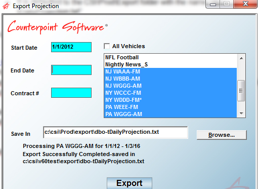
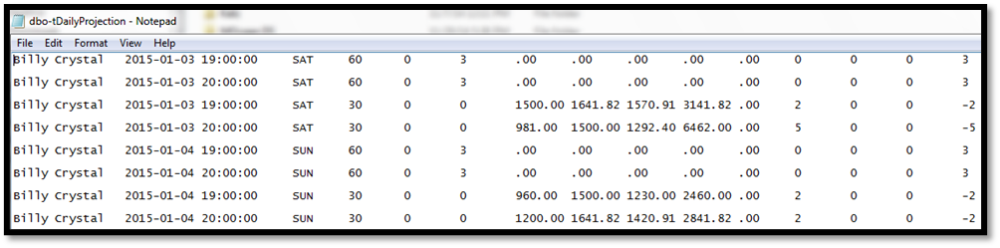
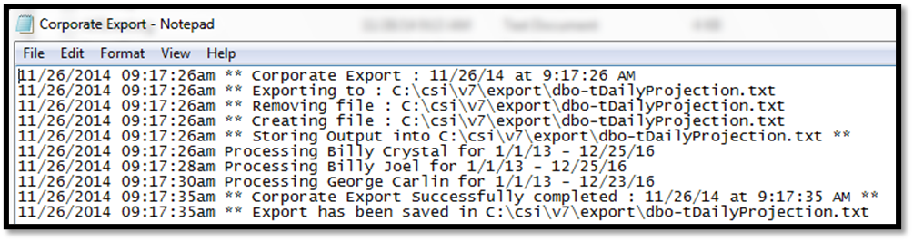

Corporate
The Corporate Export converts revenue and inventory information into a fixed format that is imported into a corporate database.
Setup
Site Options
You must activate the export in Site Options -> Options.
Vehicles
In the Vehicles -> Options -> Export screen, you must enable “Corporate”.
Operation Modes
There are two ways to run the export: Automatically or Manually.
Automatic Mode
Run via csi_server or from Windows Task Scheduler on the client server.
On the server, either define a drive mapping that matches the ones defined on client PCs or create a unique traffic.ini that will be used only by applications running on the server (setting drive and path as defined on the server).
If using csi_server: Insert a category line within csi_server.ini
If using Task Scheduler: Create a new task within the schedule task operation, Start -> Control Panel -> Scheduled task -> Add Scheduled Task
Manual Mode
The Manual mode is used to generate the export after the user specifies what is to be generated.
Create a shortcut to run the export:
- Point the Target to the ExportProj.EXE location (typically csi\prod\exe\exportproj.exe)
- Point the Start in to the Traffic.INI location (typically csi\prod\data)
- Add /UserInput in the target line of the shortcut after the application name, CSI\Prod\EXE\ExportProj.exe /UserInput
Running the Export
From the Task -> Exports menu, select Corporate Export.

Start Date: Broadcast calendar start date of previous year.
End Date: Enter an end date or leave it blank for TFN (till further notice).
Contract #: Enter a specific contract, or leave it blank to export all contracts.
Vehicles: Select the vehicles to be exported.
Save In: This is where the export file will be saved, and defaults to the standard export folder.
Click the Export button to run the export.
File Information
The export creates two files: one is the actual file to be imported and the other is an export log.
Daily Projection
The export file is called “Dbo-tDailyProjection” and is saved in the csi\prod\export folder.

Field Names
Vehicle Name, Date, Time, Day, Spot Length, Inventory, Minute, Rate, Max Rate, Average Unit Rate, Scheduled Revenue, Missed Revenue, Scheduled Units, Zero Dollar Rate Units, Missed Units, Avail Units
Corporate Export
The Corporate Export log file logs all export information and can be viewed through the Accessories -> Messages -> Message Viewer. The file is saved in the CSI\Prod\Data\Messages folder.
